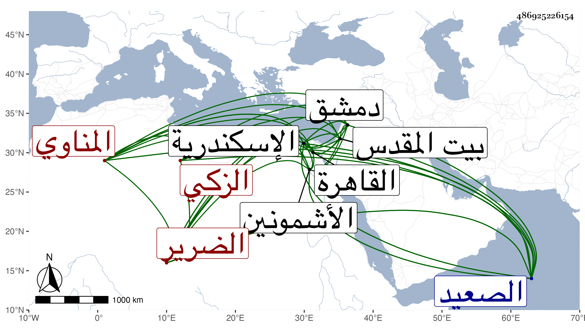

0902Sakhawi.DawLamic.ITO20230111-ara1.EIS1600.486925226154
Biography ID: 486925226154
104
أبو بكر بن عبد الله بن عمر بن خضر بن إلياس الزكي المناوي الضرير الاديب نزيل اسكندرية . ولد بالأشمونين من بلاد الصعيد سنة سبعين وسبعمائة تقريبا ثم انتقل به أبوه إلى أشموم الرمان فقرأ القرآن بها وبمنية ابن سلسيل وحج مع أبيه مرتين الأولى قبل بلوغه والثانية بعد سنة ثمانين ثم تحول إلى الصعيد وتكسب بالخياطة وتعانى النظم من صغره ثم أرشده الفخر ابن أخت الولوي المنفلوطي لتعلم العربية فبحث عليه بالأشمونين غالب الألفية ثم ورد القاهرة فقطنها متسببا ببعض حوانيتها وسافر لدمشق وزار القدس غير مرة ودخل اسكندرية بعد القرن فأقام بها يؤذن بمدرسة قائد إلى أن أضر في سنة ست وثلاثين ولقيه البقاعي في رمضان سنة ثمان وثلاثين بمدرسة ابن بصاصة منها فكتب عنه قوله
| كلما تاه دلالا وصلف | زدت شوقا وغراما وشغف |
| أهيف يخجل بانات السنقا | قده العمال لينا وهيف |
وساق قصيدة طويلة وسافر من اسكندرية بعد سنة أربعين فانقطع خبره .
